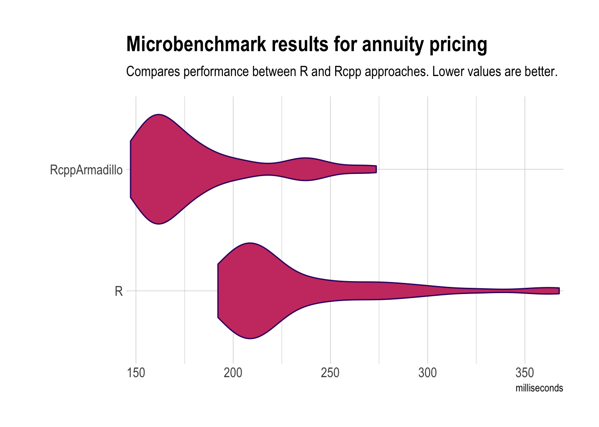

I was tidying up some R code that involved some ‘looping’ and wondered whether the approach I’d taken could be improved upon (it worked and was reasonably fast, so hadn’t bothered refactoring it until now). Essentially it gave me an excuse to finally start exploring Rcpp (in this case, RcppArmadillo).
Background is that at work we use a lot of monte carlo simulations through economic scenario generators [https://www.actuaries.org.uk/learn-develop/attend-event/economic-scenario-generators] and so are often dealing with matrices with dimensions representing timesteps (for projecting, for example, interest rates) and simulations.
In this specific case, I was looking to calculate projections of annuity prices, across a large number of simulated paths for interest rates.
The price of the annuity depends on the survival probability of the individual and the prevailing interest rate (here we make a simplifying assumption of a constant term structure for interest rates).
But we also have many simulations (typically, 5000) of what interest rates could be, projected many years into the future (for example, 70 years), meaning we end up with a pseudo-algorithm that requires nested loops.
The R code we had was already vectorised but I was curious as to what performance improvement might be possible with RcppArmadillo (which allowed me to keep much of the same algorithm logic). The rest of this post goes through the results.
First set everything up:
library(microbenchmark) # to benchmark times
library(Rcpp) # integrating C++ and R
library(RcppArmadillo) # use Armadillo library
library(ggplot2)
library(hrbrthemes) # Thanks @hrbrmstr (https://twitter.com/hrbrmstr)
set.seed(1.32)
nsim <- 5000 # let's go with 5000 sims...
nyrs <- 71 # and 70 years of projections (plus the initial values)
# I'll just create some random data for yields and the probability annuity
# payments are made (note these are definitely not appropriate numbers for
# actual use!)
yieldData <- matrix(rnorm(nyrs * nsim, mean = 0.03, sd = 0.02), nrow = nyrs)
paymentProbs <- rev(seq_len(nyrs)) / nyrsDefine functions for each of the approaches:
priceAnnuity_R <- function(yieldData, paymentProbs) {
annuityPrices <- yieldData * 0 # use yieldData to get 0 matrix of right dims
for (i in seq_len(nrow(annuityPrices))) { # projection over time
combinedProbs <- # payment probs based on projection time
if (i == 1) {
paymentProbs
} else {
tail(paymentProbs, -i + 1) / paymentProbs[i]
}
logYields <- log(1 + yieldData[i, ])
maturities <- -(seq_along(combinedProbs) - 1)
projYields <- exp(tcrossprod(logYields, maturities))
price <- projYields %*% combinedProbs
annuityPrices[i, ] <- price
}
annuityPrices
}
cppFunction(depends = "RcppArmadillo", code = '
arma::mat armaPriceAnnuity(arma::mat& yieldData, arma::rowvec& paymentProbs) {
int nproj = yieldData.n_rows;
int nsim = yieldData.n_cols;
arma::mat annuityPrices(nproj, nsim, arma::fill::zeros);
for (int iproj = 0; iproj < nproj; ++iproj) {
arma::rowvec combinedProbs(nproj - iproj);
if (iproj == 0) {
combinedProbs = paymentProbs;
} else {
combinedProbs =
paymentProbs.subvec(iproj, nproj - 1) / paymentProbs[iproj];
}
arma::rowvec logYields = arma::log(1.0 + yieldData.row(iproj));
arma::vec maturities =
-(arma::cumsum(arma::vec(nproj - iproj, arma::fill::ones)) - 1.0);
arma::mat projYields = arma::exp(maturities * logYields);
arma::rowvec price = combinedProbs * projYields;
annuityPrices.row(iproj) = price;
}
return annuityPrices;
}
')
# Check functions equivalent
all.equal(
priceAnnuity_R(yieldData = yieldData, paymentProbs = paymentProbs),
armaPriceAnnuity(yieldData, paymentProbs)
)## [1] TRUEAnd, finally, compare output:
microbenchmark(
R =
priceAnnuity_R(yieldData = yieldData, paymentProbs = paymentProbs),
RcppArmadillo = armaPriceAnnuity(yieldData, paymentProbs),
times = 50, unit = "ms"
) -> mb1
# Format inspired by https://rud.is/b/2017/09/25/speeding-up-digital-arachinds/
update_geom_defaults("violin", list(colour = "#390F6E", fill = "#CC3F71"))
autoplot(mb1, log = FALSE) +
scale_y_comma(name = "milliseconds") +
labs(
title = "Microbenchmark results for annuity pricing",
subtitle = "Compares performance between R and Rcpp approaches. Lower values are better.") +
theme_ipsum()
So the RcppArmadillo version1 does appear to give a bit of a performance boost, and for very little additional effort.
Whilst getting to grips with the nuances of Rcpp and RcppArmadillo takes a little effort, it’s definitely something worth exploring.
Interestingly, I was getting mixed performance results using a raw nested loop approach directly in Rcpp, depending on whether I ran this on my work windows laptop or home macbook (the nested loop approach was slower than the R approach on my macbook). This coincided with upgrading to R 3.5.0 at slightly different times, but I’m not confident enough to make any definitive statement on that!↩